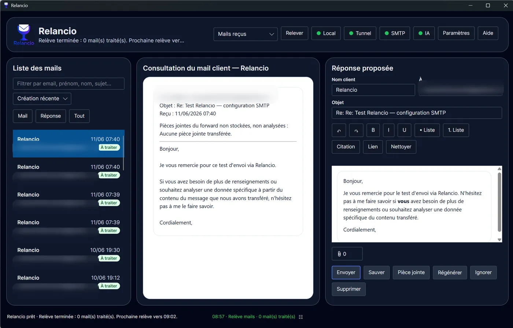
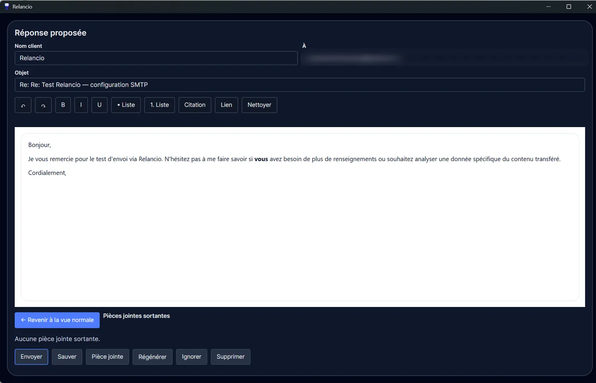

Relancio
Desktop app
The core of Relancio: received emails, sent emails, proposed replies and validation.
Main view
The desktop app is the heart of Relancio. It is used to retrieve emails, review requests, adjust proposed replies and trigger sending.
- The left column lists emails and provides search, sorting and filters.
- The central panel displays the selected client email or sent email.
- The right panel contains the proposed reply, which can be edited before saving or sending.
- The Local, Tunnel, SMTP and AI indicators give a quick overview of useful service status.

Proposed reply
Before sending, you can correct the client name, recipient address, subject and reply content. The editor supports lists, quotes, links, bold, italic, underline, undo, redo and formatting cleanup.
The attachment preview icon opens an extended reply view. It makes it easier to review, edit the content and manage outgoing attachments before sending.
- Save keeps the reply.
- Regenerate asks the local AI for a new proposal.
- Send sends the email through the configured SMTP server.
- Ignore or Delete are used to manage emails that do not require a reply.

Sent emails
The Sent emails view lets you review the history of messages sent from Relancio and prepare a new reply when the context requires it.

Visible statuses
Badges such as To process, Sent or Not answered help track the state of requests and replies. Filters make it easier to find messages that need attention.